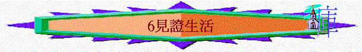
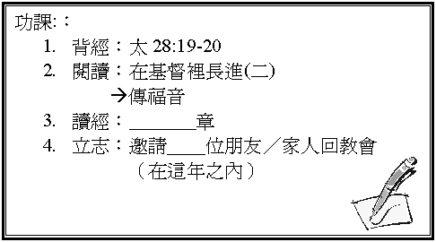

引言
有人說：基督徒在世要作好見証，何謂『好見証』？
我們為何要作『好見証』？
一．
人的責任à榮耀神（林前6:20）
1.
責任的內容
A.
聖經提到我們在世有甚麼責任？
『在身子上』代表甚麼？
B.
在彼後2:1-2提及的人物中，能否榮耀神，為甚麼？
C.
有沒有見過一些自稱為基督徒，但卻不榮耀神的人。
2.
榮耀神的方法（彼前2:12、3:15-16）
A.
聖經提到我們可以怎樣／作甚麼可以榮耀神？
B.
在現實生活中，你能否做到以上樣式？
難不難？ 試分享
二．
主的使命à傳福音（提後4:2、太28:18-20）
1.
使命的內容
A.
聖經除了吩咐我們在行為上見証神外，也吩付我們要做甚麼？
為誰做？
B.
若我們這樣做，會有甚麼福份／應許？
2.
傳福音方法（可5:18-20）
A.
主耶穌教導那被鬼附的人如何傳福音？
先向誰傳揚？
B.
試分享主在你身上作了何等的事。
C.
有沒有嘗試與家人和朋友分享信仰?
有沒有難處？
D.
有沒有一朋友和家人，你很想他們信耶穌？
3.
傳福音內容：
福音
1
2 3
1 位獨一的真神：上帝
2 個人類的問題：有罪＋要死
3 段救主的事實：降生＋受死＋復活
4.
實踐的途徑：
A.
邀請對象參加教會聚會
B.
參加教會及團契派單張及佈道工作
